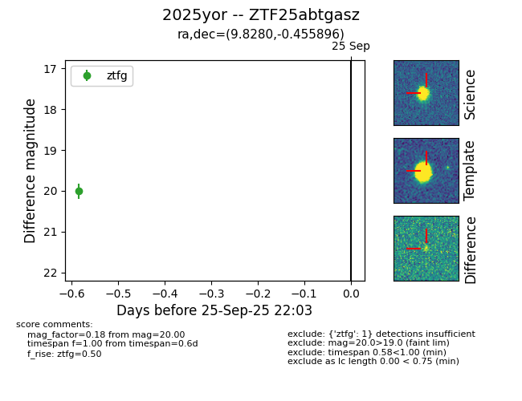

FINK: ZTF25abtgasz
Lasair: ZTF25abtgasz
ALeRCE: ZTF25abtgasz
TNS: 2025yor
YSE: 2025yor
ZTF25abtgasz (ztf,fink)
2025yor (tns,yse)
equatorial (ra, dec) = (9.8280,-0.45590)
galactic (l, b) = (116.2035,-63.16912)

last ztfg=20.00
1 ztfg detections